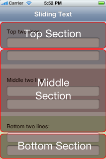
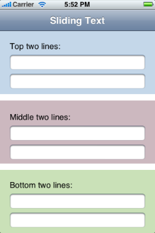
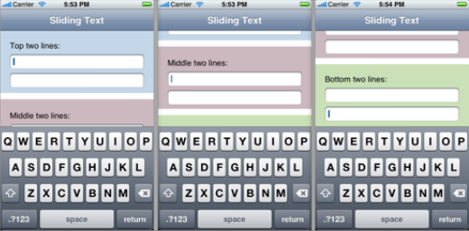

Please note: this article is part of the older "Objective-C era" on Cocoa with Love. I don't keep these articles up-to-date; please be wary of broken code or potentially out-of-date information. Read "A new era for Cocoa with Love" for more.
Sliding UITextFields around to avoid the keyboard
It's an iPhone post because I finally can. Here's a good way to slide your view around when editing UITextFields so that they never get trapped under the onscreen keyboard.
I'll be giving a talk at the Brisbane Cocoaheads meeting this Monday evening (Oct 6). Come along and heckle.
Hidden text fields
The iPhone's onscreen keyboard occupies the bottom 216 pixels on screen (162 in landscape mode). That's around half the screen, so if you ever have a text field you want to edit in the bottom half of the screen, it needs to move or it will get covered.
You can just animate the whole window upwards by the height of the keyboard when editing a text field in the bottom half but this doesn't work well for text fields in the middle (they can get moved too far up).
Instead, I'm going to show you a method which divides the window as follows:
Everything in the top section will stay still when edited. Everything in the middle section will animate upwards by a fraction of the keyboard's height (proportional to the field's height within the middle section). Everything in the bottom section will animate upwards by the keyboard's full height.
Implementing the delegate methods
All of the methods shown here should go into a view controller probably the "main" view controller for the current screen (i.e. the visibleViewController of the current UINavigationController, your RootViewController or other top-level view controller).
You will need to make this view controller the delegate (in Interface Builder) for every UITextField you want to animate.
Your view controller will need the following instance variable:
CGFloat animatedDistance;The following constants should also be declared somewhere (likely the top of the view controller's implementation file):
static const CGFloat KEYBOARD_ANIMATION_DURATION = 0.3;
static const CGFloat MINIMUM_SCROLL_FRACTION = 0.2;
static const CGFloat MAXIMUM_SCROLL_FRACTION = 0.8;
static const CGFloat PORTRAIT_KEYBOARD_HEIGHT = 216;
static const CGFloat LANDSCAPE_KEYBOARD_HEIGHT = 162;Animate upwards when the text field is selected
Get the rects of the text field being edited and the view that we're going to scroll. We convert everything to window coordinates, since they're not necessarily in the same coordinate space.
- (void)textFieldDidBeginEditing:(UITextField *)textField
{
CGRect textFieldRect =
[self.view.window convertRect:textField.bounds fromView:textField];
CGRect viewRect =
[self.view.window convertRect:self.view.bounds fromView:self.view];So now we have the bounds, we need to calculate the fraction between the top and bottom of the middle section for the text field's midline:
CGFloat midline = textFieldRect.origin.y + 0.5 * textFieldRect.size.height;
CGFloat numerator =
midline - viewRect.origin.y
- MINIMUM_SCROLL_FRACTION * viewRect.size.height;
CGFloat denominator =
(MAXIMUM_SCROLL_FRACTION - MINIMUM_SCROLL_FRACTION)
* viewRect.size.height;
CGFloat heightFraction = numerator / denominator;Clamp this fraction so that the top section is all "0.0" and the bottom section is all "1.0".
if (heightFraction < 0.0)
{
heightFraction = 0.0;
}
else if (heightFraction > 1.0)
{
heightFraction = 1.0;
}Now take this fraction and convert it into an amount to scroll by multiplying by the keyboard height for the current screen orientation. Notice the calls to floor so that we only scroll by whole pixel amounts.
UIInterfaceOrientation orientation =
[[UIApplication sharedApplication] statusBarOrientation];
if (orientation == UIInterfaceOrientationPortrait ||
orientation == UIInterfaceOrientationPortraitUpsideDown)
{
animatedDistance = floor(PORTRAIT_KEYBOARD_HEIGHT * heightFraction);
}
else
{
animatedDistance = floor(LANDSCAPE_KEYBOARD_HEIGHT * heightFraction);
}Finally, apply the animation. Note the use of setAnimationBeginsFromCurrentState: — this will allow a smooth transition to new text field if the user taps on another.
CGRect viewFrame = self.view.frame;
viewFrame.origin.y -= animatedDistance;
[UIView beginAnimations:nil context:NULL];
[UIView setAnimationBeginsFromCurrentState:YES];
[UIView setAnimationDuration:KEYBOARD_ANIMATION_DURATION];
[self.view setFrame:viewFrame];
[UIView commitAnimations];
}Animate back again
The return animation is far simpler since we've saved the amount to animate.
- (void)textFieldDidEndEditing:(UITextField *)textField
{
CGRect viewFrame = self.view.frame;
viewFrame.origin.y += animatedDistance;
[UIView beginAnimations:nil context:NULL];
[UIView setAnimationBeginsFromCurrentState:YES];
[UIView setAnimationDuration:KEYBOARD_ANIMATION_DURATION];
[self.view setFrame:viewFrame];
[UIView commitAnimations];
}Since we're writing the delegate methods...
This next method has nothing to do with animation but since we're writing the delegate methods for a UITextField, this is essential. It dismisses the keyboard when the return/done button is pressed.
- (BOOL)textFieldShouldReturn:(UITextField *)textField
{
[textField resignFirstResponder];
return YES;
}Result
For a window that looks like this:
Editing text fields in the top, middle and bottom sections will look like the following:
Notice in particular how the middle section remains in the middle of the visible area after the keyboard appears. This is the primary benefit of the presented approach.
Streaming and playing an MP3 stream
WorldTimeConverter: Dates and timezones in Cocoa